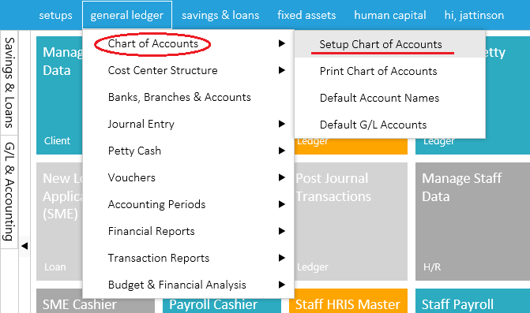
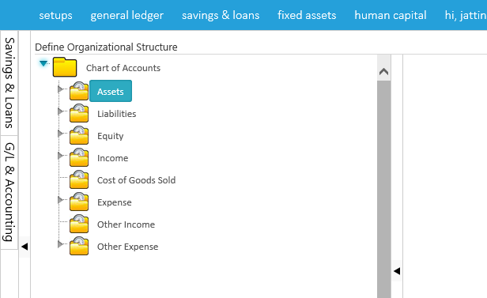

To create chart of accounts,click on general ledger and select setup chart of accounts ,a page will then open where you will be required to add your company's chart of accounts as shown in the images below.


To add a sub account right click on the main account and select create sub account head after which a page will open on your right hand side of the page.Fill in the spaces provided with maximum and minimum account number and the account sub head after which you save page as shown in the image below


Created with the Personal Edition of HelpNDoc: Free CHM Help documentation generator